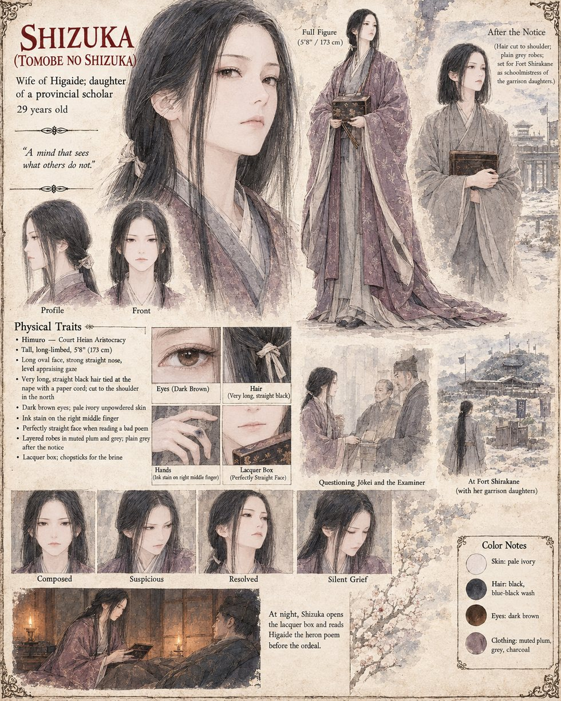

Shizuka
Tomobe no Shizuka · wife of Tomobe no Higaide, daughter of a provincial scholar · 29 years old at the story's opening
A tall woman who walks as though the floor owed her something, and who at nineteen was the only person in the capital to read one of the poems of her future husband, Higaide, aloud, to its author, with a perfectly straight face. She keeps every sheet of his verse in a lacquer box under the dressing-table because they are, she says, the best things in the house. On the night before the ordeal she reads him one about a heron in the rain, tells him that if it is a mistake he will be extremely angry afterward and that she is looking forward to it, and takes his strong left hand and turns it over, as though to learn it like a poem.
Two days after the notice she goes to Mikusa and asks the Warden, Jōkei, how Higaide had looked and whether his sentence was entered, and then to the Bureau of Inquiry, where an Examiner among his sparrows tells her only that a report existed and was eleven sheets long. She does the sum, and does not press it, not with a daughter of six and a court whose beneficiaries would hear a question about the Law's foundations as a confession. She takes the child north to Fort Shirakane, keeps a small school there for the garrison's daughters, and declines the estate offered when the Law lapses. Every first frost she tastes the plum brine with her eyes shut and says, to the empty room, that he would have complained about the salt. She does not learn, within the period of this record, that he lived.
Appears In

Related Subjects


Related Records

On the night of the nineteenth of Garren, Tomobe no Higaide kneels to redo the braid of his six-year-old daughter Tsuru, which he has never been permitted to do and does badly, while Shizuka waits in the doorway with the lacquer box of his poems.